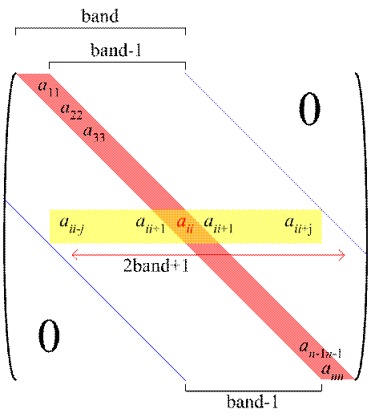
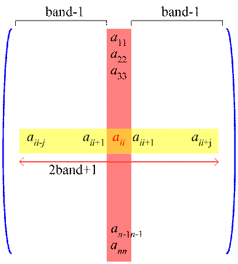

・バンド幅の最適化
有限要素法では、最終的に数千、数万オーダーの連立1次方程式を解くことになる。
ここで、バンド幅をできるだけ小さくすれば、より計算量を小さくすることができる。
バンド幅は、下図で表される。
バンド幅とは行ごとの計算する必要のある変数の幅である。これは、節点番号の配置で異なる。
上図の様にできるだけ近い節点には近い番号を割り振るとバンド幅が小さくなる。
バンド幅の詳細は下図の様になる。

バンド幅が小さくなれば、下図の様により小さな行列式を解けばよいことになる。
